Twee schermwijzigingen in de contentpijplijn die jouw sjabloon-akkoord nodig hebben. Alle schermen tonen proefgegevens, geen echte items. Beide staan achter een schakelaar die uit staat; met de schakelaar uit verandert er niets.
Samenhangende berichten op één kaart, met filters en tellingen. Rij (met opmerking) en Weg werken op elke kaart. Goedgekeurd door de controleur en door TRECHTER.
Sjabloon ja op de kaartweergave Triage/Inhalen (5b)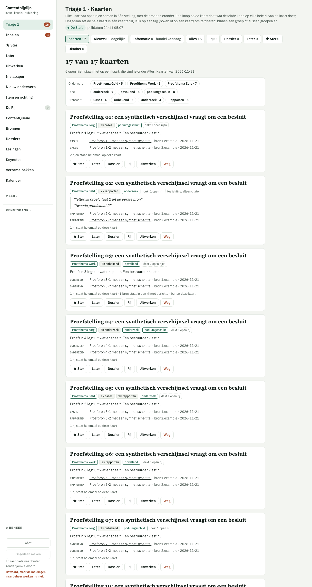
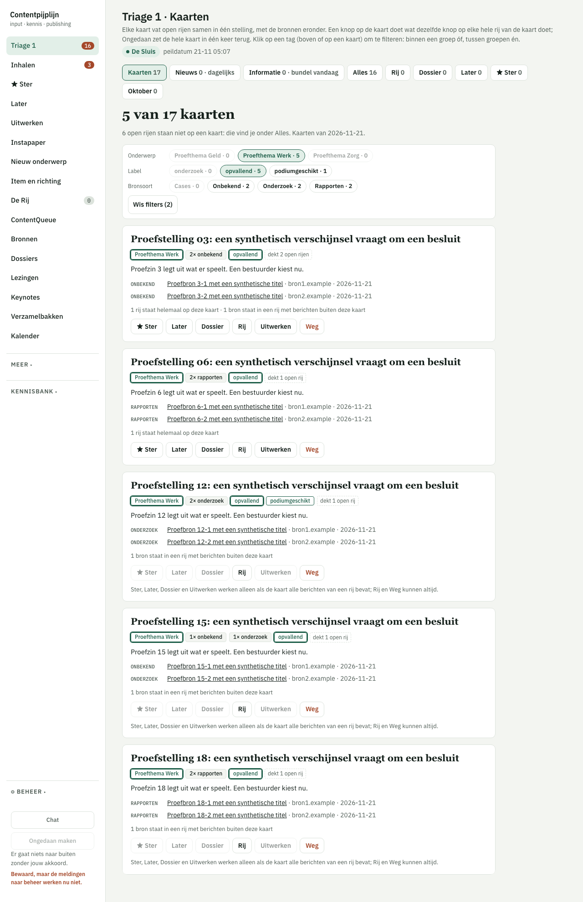
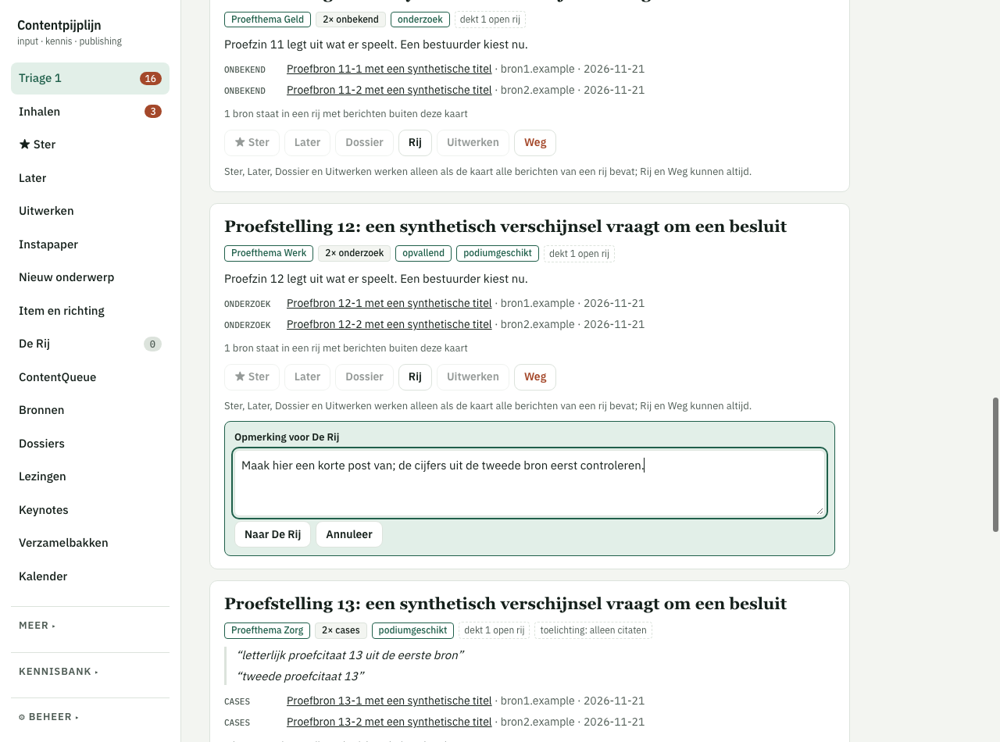
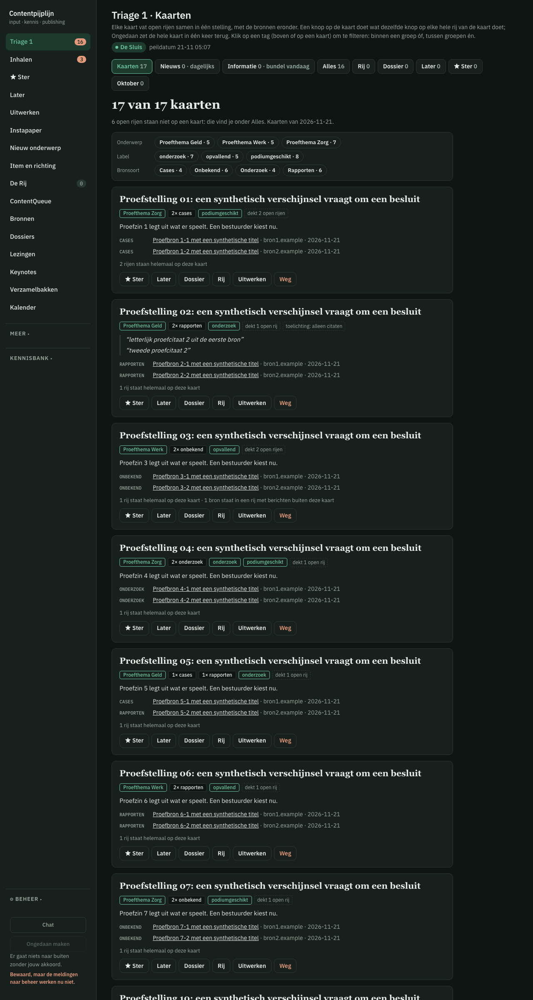
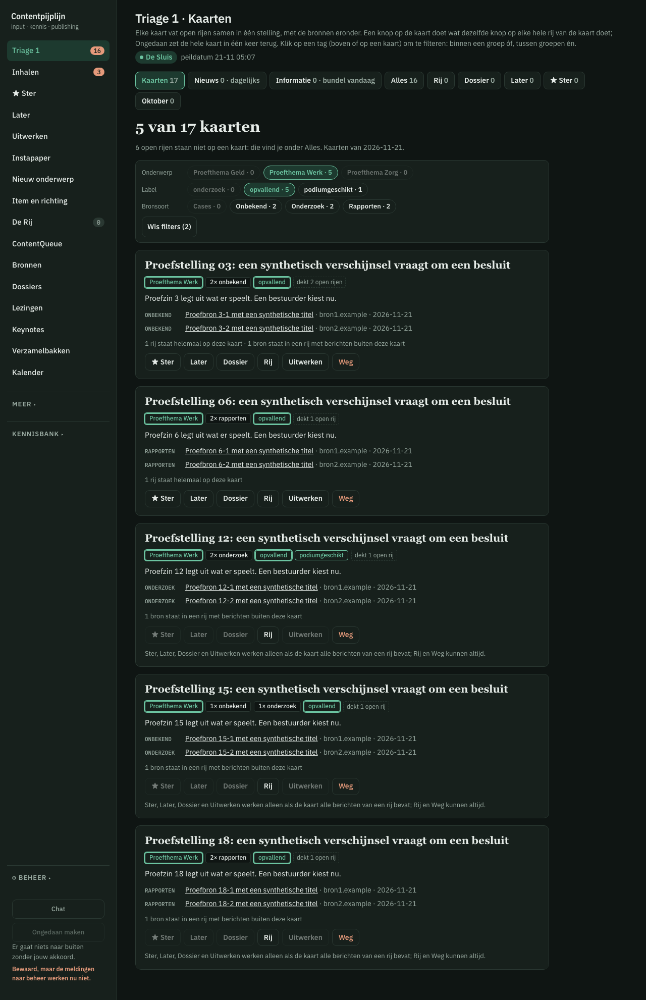
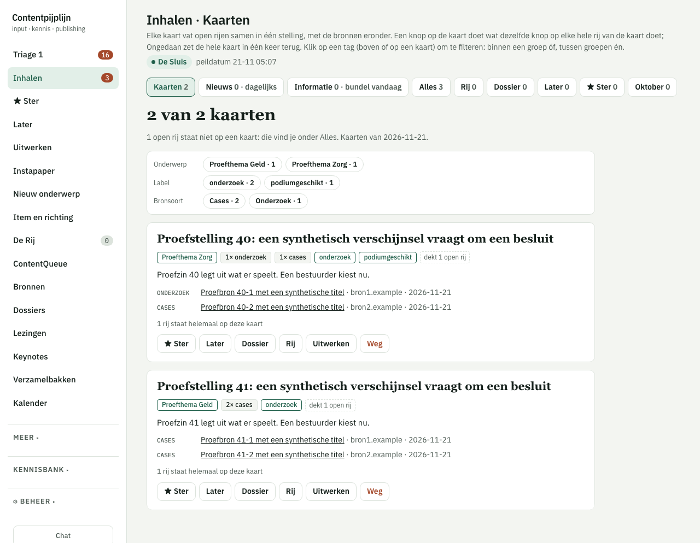
Na een klik op Uitwerken zie je per item eerlijk de stand: wacht, bezig, klaar, of mislukt met de reden. Het ontwerp kreeg van twee controleurs een ja; de bouw is in vijf rondes nagekeken. Het scherm is sinds deze beelden niet meer veranderd.
Sjabloon ja op het Uitwerken-scherm (splitsen)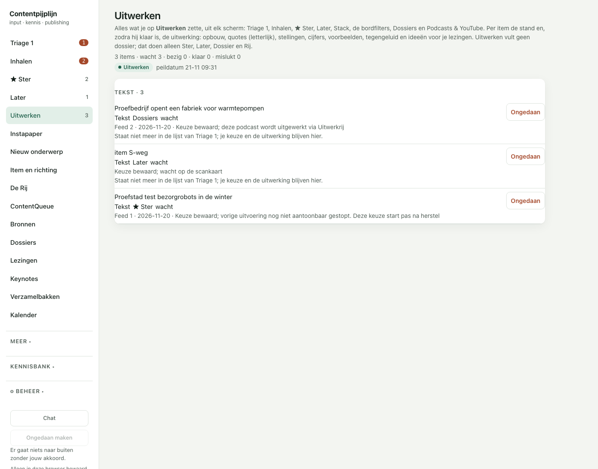
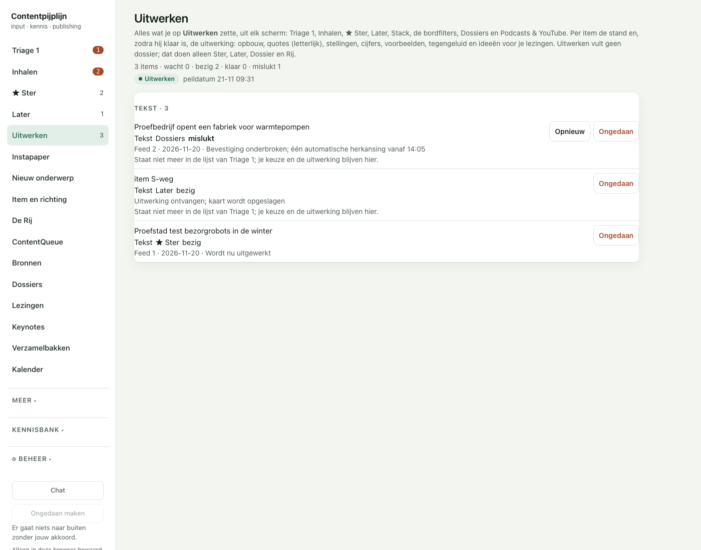
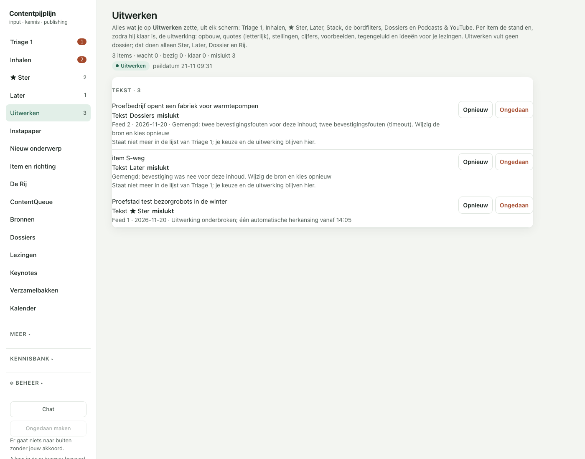
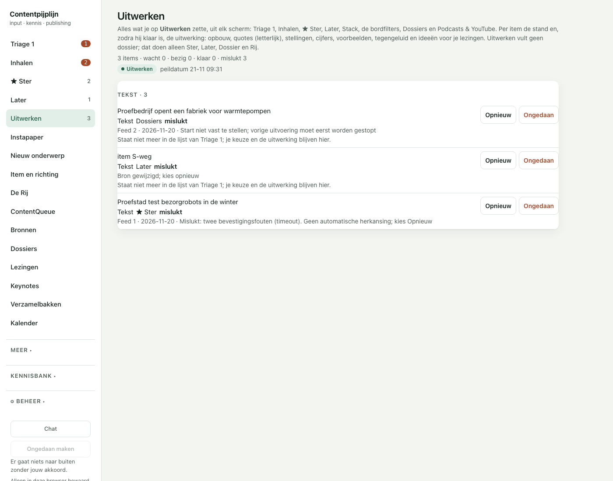
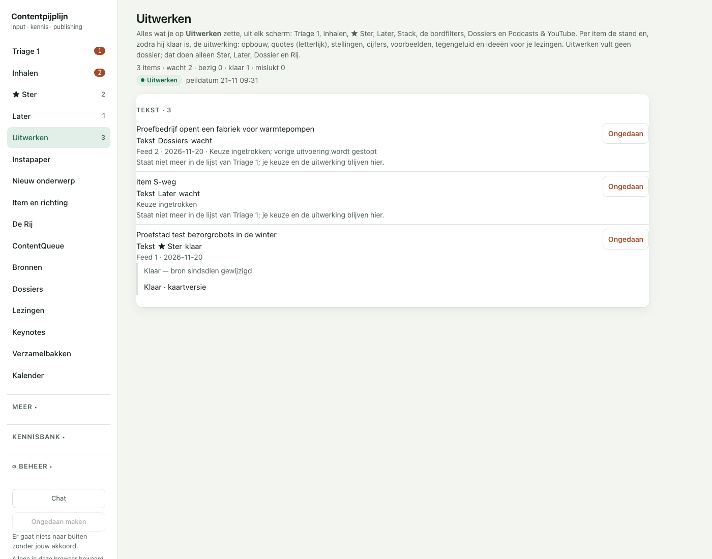
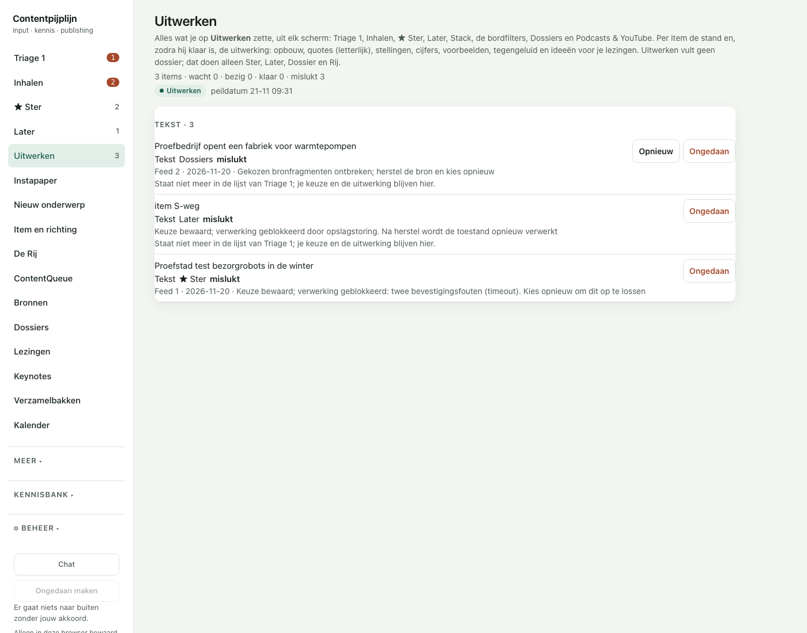
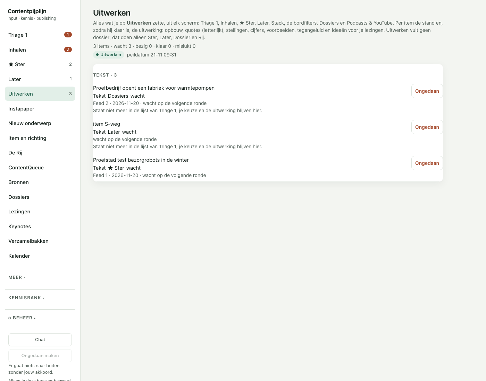